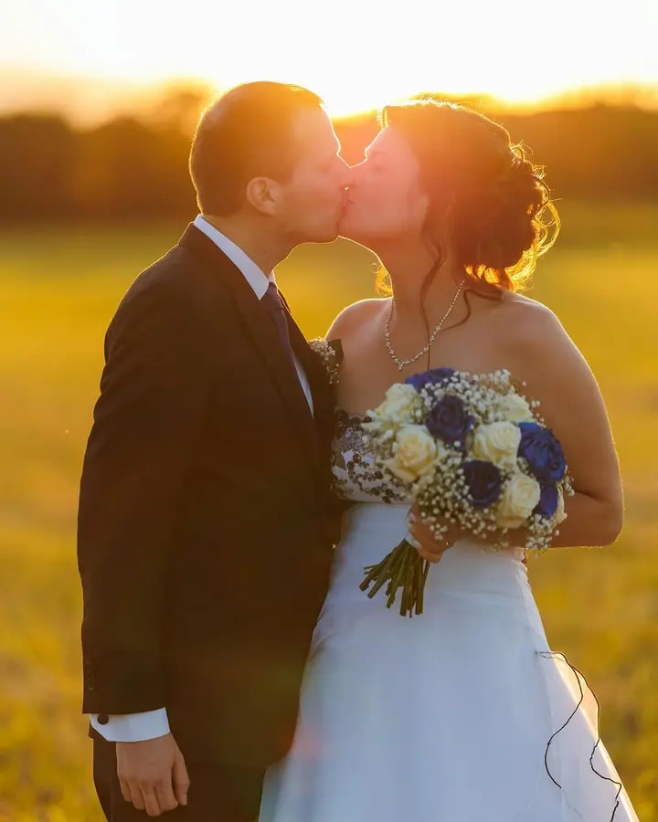
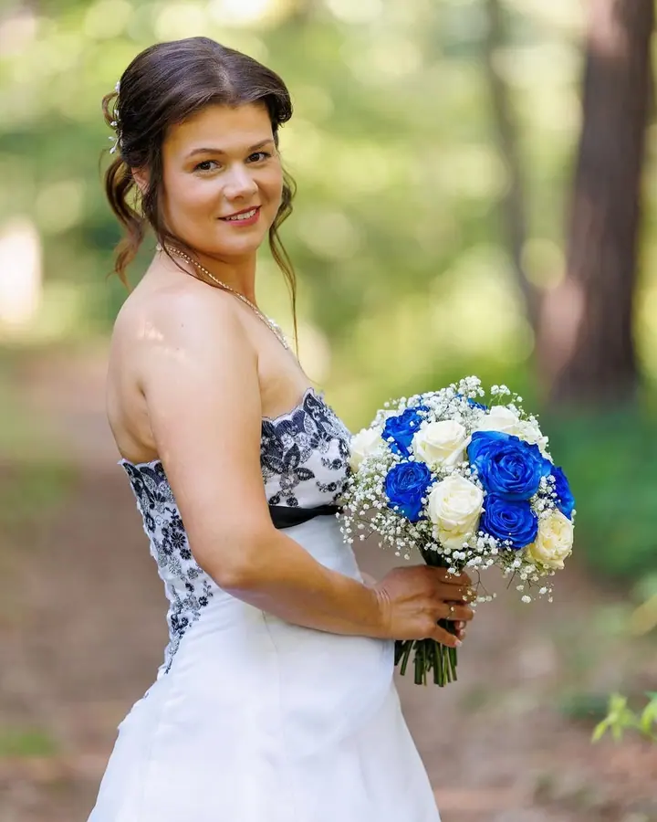
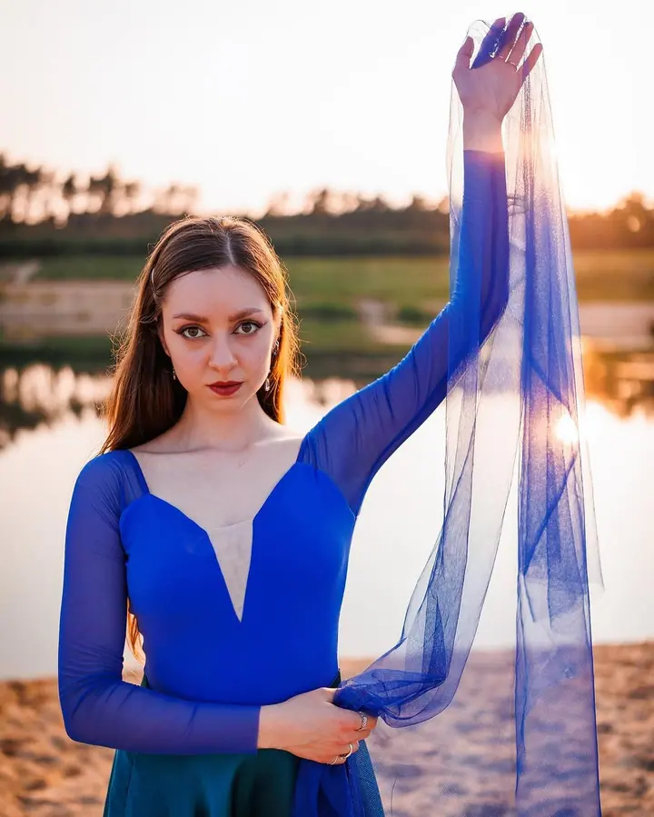
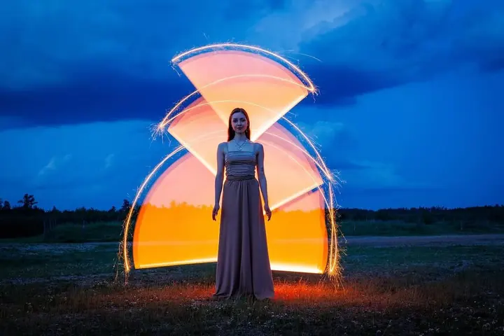

jedna
Svatební fotografie
Svatby fotím přirozeně a hlavně reportážně, s důrazem na atmosféru celého dne. Vybrat si můžete balíček na 6, 9 nebo 12 hodin, doprava po celé ČR je vždy v ceně.

Svatební, rodinný a portrétní fotograf · Hradec Králové, celá Česká republika

Jmenuji se Daniel Pražák a jsem fotograf z Hradce Králové. Fotím svatby po celé České republice, k tomu rodinné a portrétní focení převážně v přirozeném světle. Nejraději mám přírodu a západy slunce, a právě v tom duchu vznikají i moje fotky.
Více o mně
Co fotím
jedna
Svatby fotím přirozeně a hlavně reportážně, s důrazem na atmosféru celého dne. Vybrat si můžete balíček na 6, 9 nebo 12 hodin, doprava po celé ČR je vždy v ceně.
dvě
Portréty fotím v přirozeném světle, nejraději v přírodě a při západu slunce. Bez strojených póz a nucených úsměvů.
tři
Rodinné focení v Hradci Králové a okolí, v klidu a v pohodové náladě. Fotky jsou jemné, přirozené a ručně upravené.
Fotím také společenské akce, například maturitní plesy nebo taneční vystoupení.

Ten den patří hlavně vám a vašim blízkým
Za objektivem
Specializuji se na svatební, rodinnou a portrétní fotografii. Mám rád přírodu, západy sluníčka, zelenou a modrou barvu a důraz na kvalitu. Moje fotografie proto bývají přirozené, jemné, romantické a technicky pečlivé.
Jsem pohodový člověk a dobrou náladu si udržím až do večera. Většinu svatebního dne fotím reportážně a do ničeho zbytečně nezasahuji, protože ten den patří hlavně vám a vaší rodině. Když je potřeba, umím vás ale zorganizovat tak, aby všechno šlo hladce. Mám za sebou přes 50 svateb a vím, že každý den je jiný. Zatažená obloha? Skvělé světlo pro focení, pokud zrovna neleje.
Fotím na profesionální techniku od Canonu, vždy na dvě paměťové karty současně a se zálohami, takže jsou vaše fotky u mě v bezpečí. Každou fotografii upravuji ručně, jednu po druhé a bez presetů. Barvy nechávám přirozené, jen lehce zvýrazněné, aby se vám fotky neokoukaly ani po letech.
Daniel
Napíšete mi termín, místo a pár základních informací o svatbě. Ozvu se vám s dostupností a společně vybereme vhodný rozsah focení.
Termín je závazně rezervován po uhrazení zálohy 5 000 Kč a uzavřeme jednoduchou smlouvu. Před svatbou se potkáme a projdeme si plán dne.
Většinu dne fotím reportážně. Portréty rozděluji do dvou kratších bloků po zhruba 30 minutách, první odpoledne a druhý při zlaté hodince.
Každou fotku ručně upravím a do 2–4 týdnů ji najdete ve vlastní online galerii.
Portfolio
Otázky
Nabízím tři balíčky: 6 hodin za 13 900 Kč, 9 hodin za 16 900 Kč a 12 hodin za 19 900 Kč. Když potřebujete fotografa jen na obřad nebo na kratší focení, cenu rád přizpůsobím.
Doprava po celé České republice je vždy v ceně. Svatby v zahraničí řešíme individuálně.
Fotografie dostanete v online galerii do 2–4 týdnů. Podle délky focení je to zhruba 250 až 700 upravených snímků.
Termín je závazný po uhrazení zálohy 5 000 Kč, doplatek je splatný do 7 dnů od svatby. Ke každé svatbě uzavíráme jednoduchou smlouvu.
Ano, za 3 000 Kč a 20 upravených fotografií. Je to dobrá příležitost se poznat a fotky můžete použít třeba na pozvánky nebo svatební web.
Napište pár vět o tom, co si představujete. prazakfoto@gmail.com